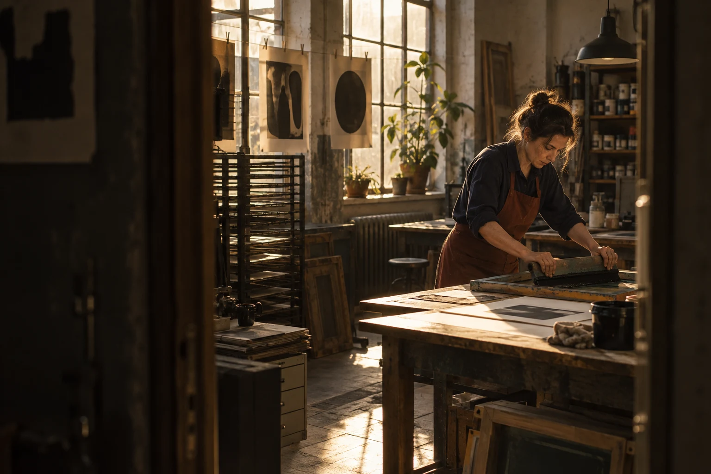

12 SECONDS
Arrive before the words
A wide view holds the workshop as the maker prepares the printing table.
Production: Observe the actual working rhythm before asking for a repeat.
Brand documentary / concept treatment
PROPOSED LENGTH / 01:30
PROPOSED SHOOT / 2 DAYS
STATUS / UNPRODUCED CONCEPT

The intention
Let a viewer understand the care, repetition and judgement behind a screen print before asking them to value the finished object.
For whom: People choosing objects made by a small independent workshop.
We arrive before an introduction. A frame is set, paper is aligned and the first pull of ink gives the day its rhythm. Only after watching the work do we meet the maker. The closing image returns to the print, now carrying the decisions we have seen.
Stay close without directing every gesture. One conversation provides context; working sounds give the sequence its structure. The workshop remains a working place, not a dressed showroom.
An annotated sequence
Choose a shot to read its direction. Two concept stills illustrate the six proposed beats; this is a storyboard reader, not film or audio playback.
SHOT 01 / 00:00–00:12
A wide view holds the workshop as the maker prepares the printing table.
PRODUCTION NOTEObserve the actual working rhythm before asking for a repeat.
Landscape crop of an illustrative still. Dashed inset is a composition guide, not a delivery specification.
A wide view holds the workshop as the maker prepares the printing table.
Production: Observe the actual working rhythm before asking for a repeat.
Move close to the frame, ink and paper, keeping the gesture legible.
Production: Allow time for detail coverage without interrupting the process.
Follow one print from alignment to the lifted screen.
Production: A complete action matters more than a collection of disconnected details.
A short conversation explains the choice that changed this print.
Production: Interview words would come from a real participant, not an invented testimonial.
Return to the hands and the next sheet, showing small variations.
Production: Capture a second action and leave room for continuity in the edit.
Hold the finished print within the workshop, then let the scene settle.
Production: Keep a clean closing frame for an agreed title, if required.
Proposed direction only: the pull of the squeegee, paper movement and one short interview passage. No recorded interview, music or sound file is supplied.
Two proposed shoot days in one workshop: one for observation and a conversation, one for process details and alternate framing. Location, participant permissions, access and final schedule would be agreed before a real shoot.
Proposed 90-second landscape film, with two shorter edits separately agreed from the same story. Vertical framing must be planned on set rather than assumed from a crop.
The TXT includes the narrative, timed shot list, proposed scope and the concept-project boundary.